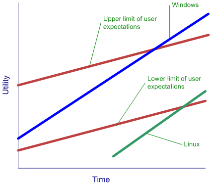

|
March 2003 Archives Code generation links
2003-03-22
I spent some time this evening googling to see who else is talking about code generation. This first article by Matt Stephens is a very good overview of the problem space. He motivates the problem well, and motivates why code generation is a good fit. In particular, he spends tie talking about generating the data access layer of an application, an area that I often see as being some of the "low hanging fruit" for code generation. Unfortunately, Matt doesn't provide any concrete examples of code generation in action, which makes his paper feels a bit too abstract. Next, I found an article that talks about generating code using XSLT. Jeff Ryan walks through a fairly complete sample where he builds a JavaBean component using XML and XSLT. Christian Georgescu wrote a similar article in the C/C++ Users Journal where he talks about generating C++ code from XML and XSLT. I like Christian's motivation part of his article. Based on my experience, writing a code generator in XSLT is difficult since the syntax of XSLT tends to obscure what the generated code looks like. Maintaining an XSLT-based code generator would be difficult for non-trivial applications. The thing that I really like about gslgen is that the syntax of the code generator is very clean and simplistic. Over the next week or so, I'll publish a few sample code generation scripts using gslgen to illustrate the utility of the technique. Sleepless nights and future plans
2003-03-13
Thanks to everyone who said hi to Kobe! We can see he's getting quite the fan club on the web as well! I'm writing this entry after I took Kobe out three times to go potty. He signaled that he needed to go at 11:30pm, but it took three separate trips down to his spot (and about 1 hour of total time) before all of his business was done. I suspect that some of the trouble was related to switching his crate from a wire cage to a Vari enclosed crate; this is his first night in his new crate, and there was the expected bit of resistance. However, he's adjusting a lot better to the new crate than he did initially to his old crate, and we're hoping that the smaller size and a more den-like feel will help him (and us!) in the long run. Now I have to look forward to the 4:00am potty run ... I can't wait until he sleeps through the night. The peace and quiet that I get at this hour lets me reflect on future plans. There are two key pieces of technology that figure heavily into my plans: code generation and Longhorn. I've been spending some time recently doing some consulting work on code generation in a large distributed .NET application. The feedback that I'm getting based on our initial week of consultation is extremely positive. I'm going to be spending a lot of time over the next few months working with this company to integrate code generation into their development process. I haven't been this excited about consulting in a long time; I look forward to seeing my client succeed. I'm very excited by the promise of code generation as a "force multiplier" in the development process. The abstraction level that you can reach is really unsurpassed by any other technique that I've worked with. You can simply generate better code faster using code generation. I'm seriously thinking about putting my ideas down on paper, and building a set of open source code generation tools. The tool I'm using now, gslgen, is a classic 80% tool. It does a good enough job, but there's a lot of interesting ways that it could be extended. More on this later. The second key technology in my future plans is Longhorn. However, since, I'm all NDA'd up on Longhorn, there won't be anything showing up on this web site. The only thing I can say is make sure that you go to the PDC this year. This promises to be the most important PDC since the .NET PDC in 2000. Introducing Kobe
2003-03-11
My extremely low blogging frequency of late can be partially explained by this snapshot:
As new parents, Carolyn and I have had a few sleep-deprived nights as we struggled to understand Kobe and how to communicate with him. Crate training has really helped to housebreak him. So far there have only been a few isolated accidents as we're learning his signals to us. He's got a really great temperment. He loves meeting new people, and is absolutely the star of our apartment building. His fan club becomes bigger every time we take him outside to go potty.We took Kobe for his first visit to his vet, Dr. Al Moroz of the Animal Hospital of High Park, this afternoon. Al's a tremendous vet; we were so impressed by how well he handled Kobe and how he was able to settle down his anxious parents! Al's got a new black Lab puppy as well, who's just a week younger than Kobe. His stories about his dog and how she gets along with him really helped us out in understanding black Lab behavior. I can't recommend Al enough as a vet. Kobe's a big puppy already. Born on January 5, he already weighs a whopping 17 pounds as a 9-week old! To put that growth spurt in perspective, he weighed 9 pounds on Februrary 18 ... Al figures he's going to be a really big dog when he's full-grown. His best guess right now is 90+ pounds. Test First Development Pitfalls
2003-03-02
I've been spending a fair amount of time recently writing GUI rendering code. I've also been spending a fair amount of time recently grappling with unfamiliar API's. These experiences have revealed two areas where test-first development doesn't quite work:
The first case encompasses virtually all of GUI development, regardless of whether your GUI is an HTML page or a traditional Windows application. In these cases, whether or not something is "correct" depends on how an object appears. Unfortunately, there are usually several different ways to render the object, all of which yield correct results. Furthermore, it's really hard to determine how an object is rendered programmatically, whereas it is usually quite simple for a human to determine if an object looks "correct". Dan Dunham recently wrote about this problem. One suggestion that makes a lot of sense involves validating the objects that define the state for the to-be-rendered object (e.g. 10x20 pixel green box at 5,20). This way your unit tests can test to see whether the object contains the expected state at the expected time. The second case commonly turns up when you have finished writing your disposable prototypes, and have begun writing your production code. In these early stages of development, your class interfaces tend to change very quickly. The desired interaction between different classes and objects in your system is generally never evident from the beginning, and your are forced to discard initial designs as your code quickly evolves. I found that maintaining a suite of unit tests for these classes greatly increases the amount of friction involved in changing a class. This causes me to rapidly run into my 7+/-2 limitations, and slows down the development process in these critical early stages of development. This experience has led me to change my approach in these cases: I build my unit tests once the interactions between different classes and objects have been established. Microsoft vs. Open Source
2003-03-02
I saw that Dare Obasanjo commented on Robert Scoble's open letter to Bill, and I felt compelled to add some comments of my own to the discussion. One book that has strongly influenced my thinking over the past few years is Clayton Christensen's "The Innovator's Dilemma". The following figure represents a Christensen-like analysis of Windows vs. Linux: 
The key point about this figure is that the rate of innovation in Linux is greater than the rate of increase of the lower limit of user expectations. Therefore it is inevitable that the Linux curve and the lower limit of user expectations curve intersect. This is what Christensen calls a "disruptive technology". In the case of server applications, Linux has clearly exceeded the lower limit of user expectations, which explains why Linux is commoditizing the market for low-end server applications. In the case of desktop applications, the OpenOffice / Linux combination hasn't quite reached the lower limit of user expectations, which explains the relatively shallow penetration of Linux into those markets. However, if you accept that the rate of OpenOffice / Linux innovation will outstrip the rate of increase in the lower limit of user expectations, it becomes inevitable that Linux will begin to hit Microsoft close to home: in the desktop and the office productivity markets. Unfortunately for Microsoft, many of the recent features that have been added to Windows / Office have primarily benefited the high-end (read: Enterprise) user. In many ways, I feel that the current package that Microsoft offers outstrips the upper limit of user expectations. So, what can Microsoft do about this problem? Increase the lower limit of user expectations. Drive the pace of innovation (and user expectations) so that the slope of the lower limit of user expectations line is parallel to, or steeper than the line that defines the rate of Linux innovation. I suspect that this was what Dave Stutz meant when he told Microsoft to keep innovating and to stop looking over their collective shoulders. Another (albeit radical) possibility would have Microsoft give away the base services that comprise Windows, and sell value-added technologies that layer on top of that base. This would get Microsoft a lot closer to the oft-desired subscription-based business model, while blunting the effect of Linux on the desktop marketplace. However, this approach would cannibalize Microsoft OEM "computer tax" revenues, which means that it would likely only be employed if:
How this ultimately plays out is anyone's guess. But it means that we're in for some exciting times over the next few years. |
March 2003
February 2003 January 2003 December 2002 November 2002 October 2002 September 2002 August 2002 July 2002 June 2002 May 2002 April 2002 March 2002 February 2002 January 2002 December 2001
- Book suggestions
- Interface dispatch vs. object reference dispatch - x86 Resources - Entertainment PC's Part 2 - Entertainment PC's - Hello CppUnit
|